Our task this week was to make a fiber composite with a light and strong structure.
I decided to try out a bunch of different fiber combinations, to see how they would behave with the resin. So I picked some burlap, pieces of old jeans and a thin cotton fabric for my tests.
The recommended resin for this assignment was Entropy Resins Supersap, which is a slightly more sustainable binder than the usual epoxy, polyurethane and polyester resins available in the market.
I also decided to try out different release agents for my composite: mold release from Smooth-On, vaseline and food film.
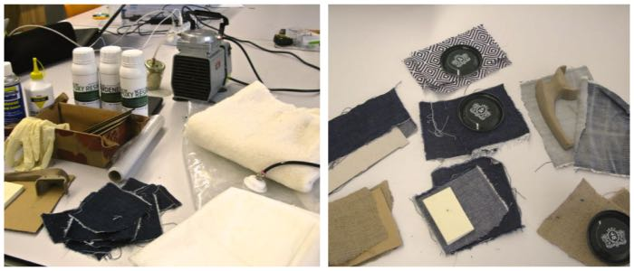COUPON MAKING
I started by preparing five different coupons:
- 1 with 2 plies of jeans (vaseline release)
- 1 with 3 plies of jeans (smooth-on mold release)
- 1 with 2 plies of burlap
- 1 with 2 plies of burlap and cardboard inbetween
- 1 with 4 plies of cotton fabric
I carefully mixed the 2 parts of the resin (50/50 ratio in volume) and stirred the mix for a good 2-3 minutes.
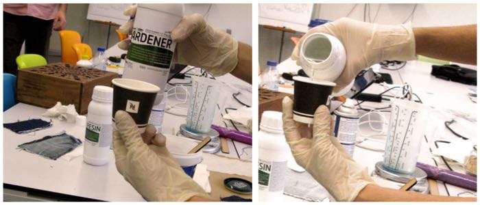I then applied the resin to the pieces of cloth with a spatula.
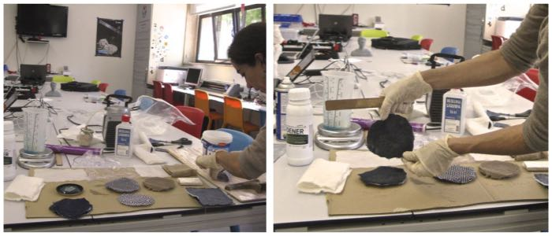Once all the pieces were soaked in the resin, I added a breeder layer on top. I used 2 different types of breeder material, to see which worked best. On some I used food film on which I made a ton of little holes; on others, I used sewing buckram (a somewhat stiff, perfurated fabric), sprayed with Smooth On mold release. I then added a layer of sewing batter to absorb the excess resin and put the coupons in the vacuum bag, which was connected to the air compressor. I left the coupons in the bag overnight.
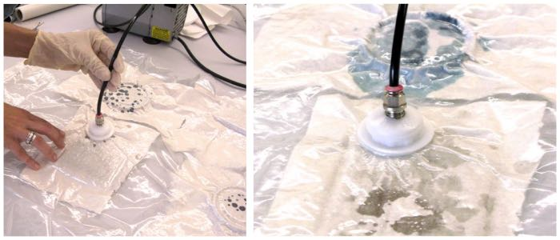The next day, I de-bagged the coupons to see how well they had cured.
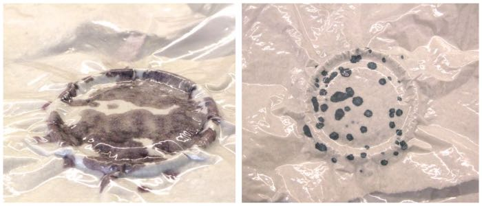Although they were no longer sticky, they were clearly not hard enough.
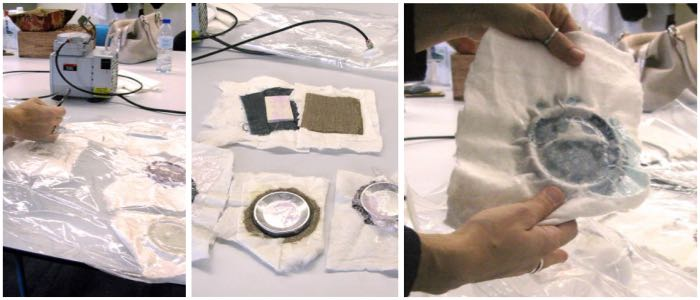I peeled off the breeder and bleeder layers and (most of) the food film and trimmed some of the coupon's edges. Then I put them in the oven, for faster curing.
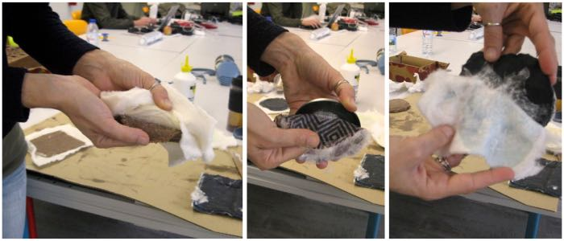I left them in the oven at 30ºC for about three hours.
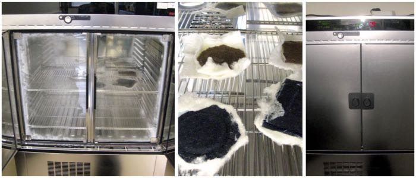After that, the composite was harder but still flexible -- clearly still not fully cured (!). I trimmed off some edges and put the coupons back in the oven. This time I left them one hour at 44ºC and two hours at 55ºC.
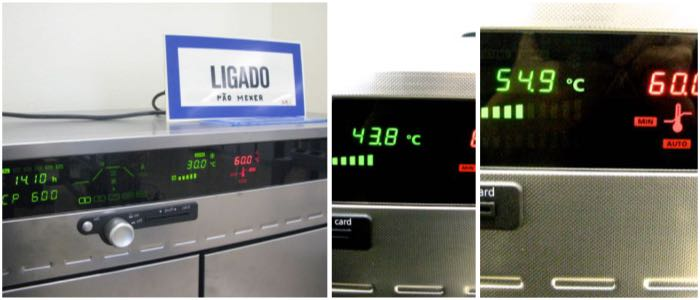The next day, my coupons were a bit harder, but still not completely stiff.
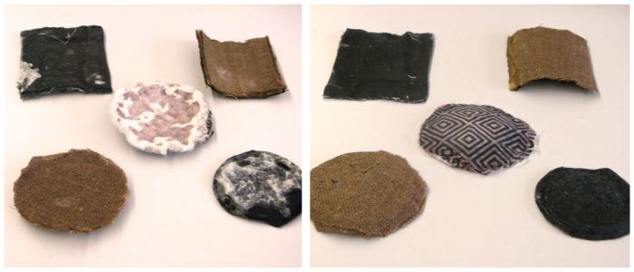
So I moved on to make my final piece - a burlap bowl with an outside layer of cotton fabric.
COMPOSITE BOWL:
I started by cutting my mold tool. I lasercut several oval pieces of MDF in different sizes.
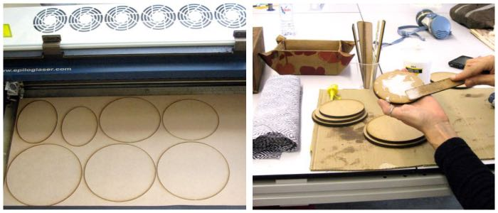And then I glued them all together for my bowl structure.
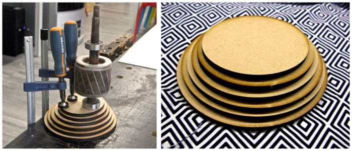Then I lasercut my fibers. The cotton fabric pieces were ready in no time, but I had a little trouble with the burlap. I didn't place it properly on the laser's table, so it caught fire around the edges (which I should have trimmed), where the fibers are looser. I decided to wet the burlap with some water and try again. This time the laser cut it without a problem.
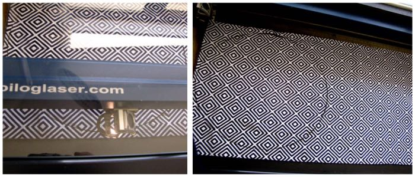I then applied the resin to the fiber pieces and placed them on top of the tool.
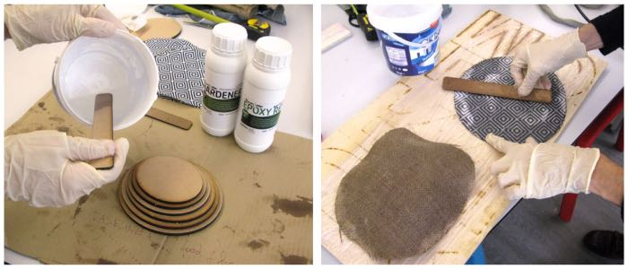I added the bleeder and breeder layers (this time I used the "proper" breeder film -- it works as well as the buckram sprayed with mold release, definitely works better than the food film with punched holes).
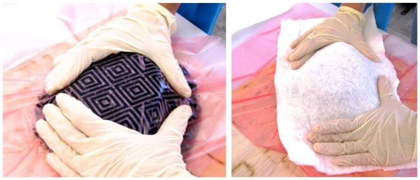I put the bowl inside the vacuum bag, and after a couple of minutes the resin started to bleed. Once again, I left the compressor sucking the bag's air all night long.
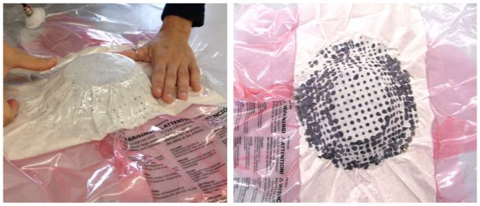
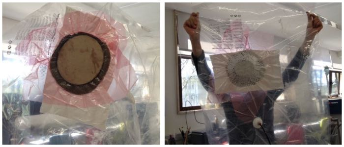
And the next day again...my composite was soft, clearly not completely cured! I put it in the oven at 50ºC for a few more hours, hoping the curing process will speed up.
tic-tac tic-tac tic-tac......
UPDATE: Five days later, the composite is still pretty soft...! I'm starting to think that the resin will never cure